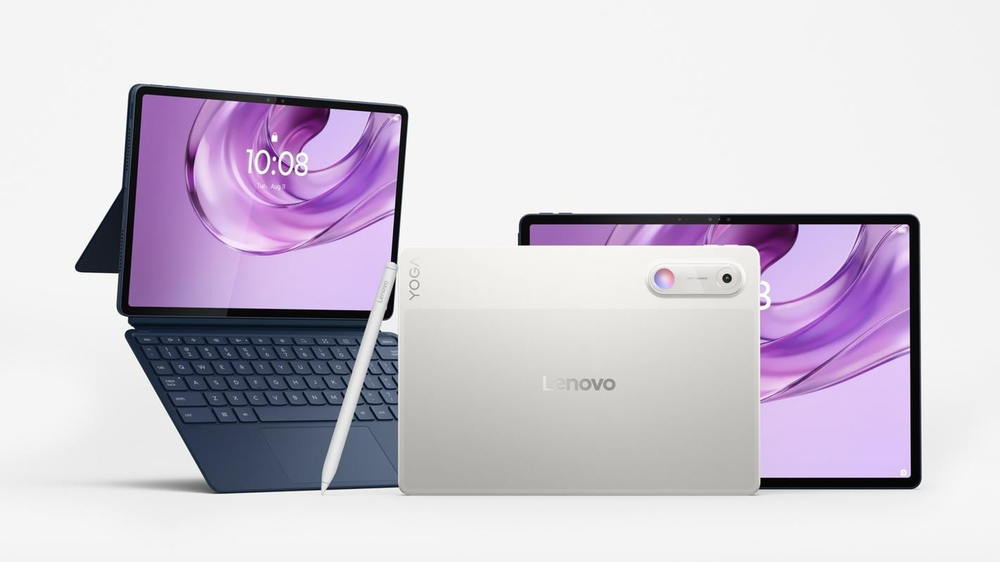

联想 Yoga Tab 10

卷轴式圆柱电池与三种支架姿态，续航长达 18 小时。
客观评测
Yoga Tab 10 采用独特的卷轴式圆柱电池设计，机身厚度沿边框渐变约 3 至 8 毫米，内置约 9000mAh 电池，官方标称续航可达 18 小时，是同尺寸平板中的续航冠军。10.1 英寸 1280×800 屏幕，联发科四核 1.2GHz 处理器，1GB 内存。圆柱体兼作支架，支持手持、站立、悬挂三种姿态，整机约 605 克。
主观点评
挂在衣钩上的那一幕是它最著名的广告画面：别人还在找支架，它已经吊在厨房门后播菜谱。圆柱转轴握在手里也格外踏实，看电影时随手就能找到舒服的角度。这种形态即功能的设计思路，让联想平板在同质化年代获得极高辨识度，也是少数真正解决平板怎么立住这一痛点的方案。
优点与不足
- 续航表现远超同尺寸竞品
- 卷轴支架形态辨识度极高
- 悬挂模式适配厨房等场景
- 处理器性能仅够日常使用
- 重量集中在圆柱端，久持累手
- 屏幕分辨率不高
参数规格
| 屏幕 | 10.1 英寸 IPS 触摸屏 |
|---|---|
| 分辨率 | 1280×800 |
| 处理器 | 联发科 MT8125 四核 1.2GHz |
| 内存 | 1GB |
| 存储 | 16GB，支持 microSD |
| 系统 | Android 4.2 |
| 电池 | 约 9000mAh，官方标称续航约 18 小时 |
| 摄像头 | 后置 800 万、前置 160 万像素 |
| 重量 | 约 605 克 |
| 厚度 | 边框约 3 至 8 毫米渐变 |
| 特色 | 手持、站立、悬挂三种支架模式 |